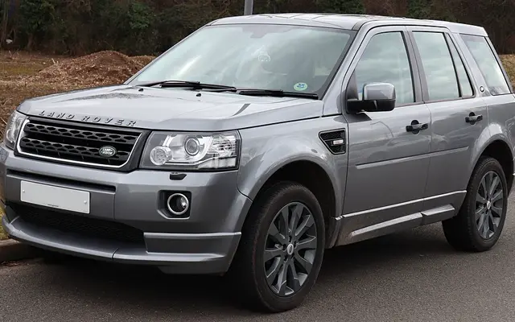

Par Motor › Precios por modelo › Land Rover Freelander
Precio de segunda mano · noviembre de 2026¿Cuánto vale un Land Rover Freelander de segunda mano?

Precio justo estimado de un Land Rover Freelander usado en España, año por año, con los kilómetros normales para su edad y en buen estado: de 7.000 € a 15.600 €. Para tasar el tuyo con sus kilómetros reales y su estado, usa el tasador gratis.
Precios del Land Rover Freelander por año
Freelander 2 (2006–2014)
Precio de nuevo: TD4 2.2 160 CV, 34.000 € · Si4 2.0 240 CV, 38.000 € · TD4 2.2 150 CV, 33.000 €
| Año | Km normales | TD4 2.2 160 CV · Diésel | Si4 2.0 240 CV · Gasolina | TD4 2.2 150 CV · Diésel |
|---|---|---|---|---|
| 2014 | 100.000 km | 13.700 € | 15.600 € | 13.300 € |
| 2013 | 100.000 km | 12.600 € | 14.500 € | 12.200 € |
| 2012 | 100.000 km | 11.700 € | 13.400 € | 11.300 € |
| 2011 | 100.000 km | 10.800 € | 12.400 € | 10.500 € |
| 2010 | 100.000 km | 10.000 € | 11.500 € | 9.700 € |
| 2009 | 100.000 km | 9.200 € | 10.600 € | 8.900 € |
| 2008 | 100.000 km | 8.500 € | 9.800 € | 8.200 € |
| 2007 | 100.000 km | 7.900 € | 9.000 € | 7.600 € |
| 2006 | 100.000 km | 7.300 € | 8.400 € | 7.000 € |
Kilómetros normales: 15.000 al año en gasolina, híbridos y eléctricos, y 20.000 en diésel, con un máximo de 100.000 km (por encima no tasamos: el precio depende demasiado del historial de cada coche). Cifras redondeadas a 100 €.
Preguntas frecuentes
¿Cuánto vale un Land Rover Freelander de segunda mano?
Según el año, la versión y los kilómetros, un Land Rover Freelander usado vale hoy de 7.000 € a 15.600 € en España. El más barato de nuestra tabla es un TD4 2.2 de 2006 (7.000 €) y el más caro un Si4 2.0 de 2014 (15.600 €). Son precios justos estimados entre particulares y profesionales, con los kilómetros normales para su edad y en buen estado.
¿Cuánto valor pierde un Land Rover Freelander al año?
Con unos años encima, un Land Rover Freelander pierde alrededor de un 8 % de su valor cada año (calculado sobre el TD4 2.2 de la generación Freelander 2). Los primeros años la caída es mayor y a partir de los 70.000 km se acelera.
¿Qué motorizaciones tiene el Land Rover Freelander?
En nuestra base de datos hay versiones diésel y gasolina, en 1 generación: Freelander 2.
¿Cómo sé si me piden demasiado por un Land Rover Freelander?
Abre el tasador de Par Motor, elige el Land Rover Freelander, el año y los kilómetros reales, y escribe lo que te piden. Te diremos si está por debajo del precio justo (chollo) o por encima (caro). Es gratis y no pide registro ni matrícula.
Otros Land Rover
Compara su coste real
El precio de compra es solo una parte. Mira cuánto te costaría al mes con combustible, seguro, neumáticos, mantenimiento y lo que pierde de valor.
Abrir el comparador →